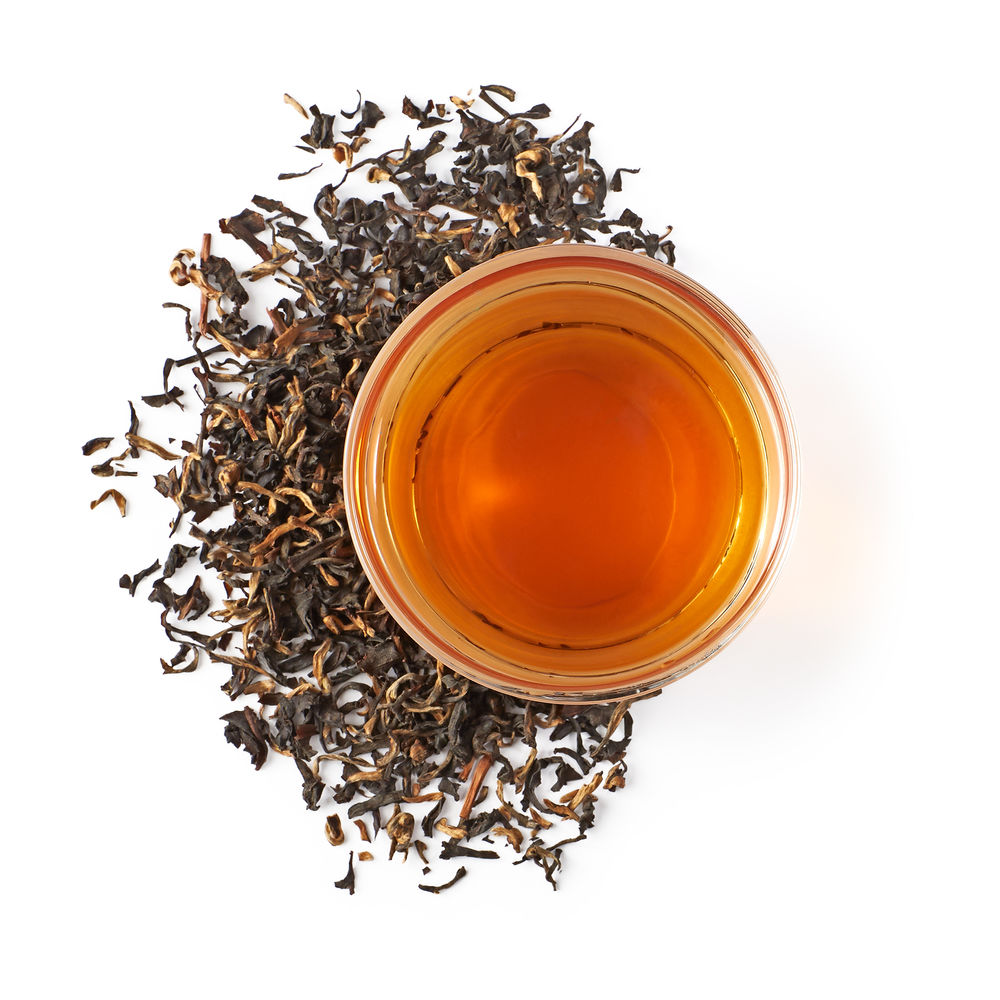

-

Smooth infusion with bergamot overtonesFamously highbrow and high grown, Earl Grey is a top-of-the-tier timeless classic. Aromatic bergamot adds a refined tart citrus taste to this dark, full-lead tea with prized tiny silver tips.
Earl Grey
-
Treat yourself to a highly coveted tea from Sri Lanka.In a region dominated by machine processing and commodity-grade teas, this hand-plucked, full-leaf grade is a rare and remarkable find. It grows 2,000 feet above sea level, resulting in a high percentage of silvery buds. Sourced from Sabaragamuwa and Ruhuna Tea Gardens.
Ceylon
-

Savor the highest-grade Indian black tea with a high percentage of golden tips.A brief peak harvest between mid-May and early August yields this renowned black tea from Assam, India. Colorful golden tips mingle with full leaves to create rich flavors and aromas.
Golden Tip Assam
-
Light bodied infusion with crisp floral undertones.oung black tea leaves feature vibrant gradients of green colors that yield a high content of silvery tips and buds. This tea is scrutinized for purity in taste and features a harvest of the first flush of leaves from six of our private reserve tea gardens.
Darjeeling
-
Info About Early Grey Tea Info About Early Grey Tea Info About Early Grey Tea Info About Early Grey Tea Info About Early Grey Tea Info About Early Grey Tea Info About Early Grey Tea Info About Early Grey Tea Info About Early Grey Tea Info About Early Grey Tea Info About Early Grey Tea
Golden Monkey
-
Full-bodied infusion with rich cocoa undertonesSteeped in ancient lore and imperial exclusivity, this legendary top Chinese tea is the finest black tea from the Fujian province. A smooth tippy tea, rich with complex cocoa undertones, it manages to be extremely low in tannins yet rich in flavor.
English Breakfast